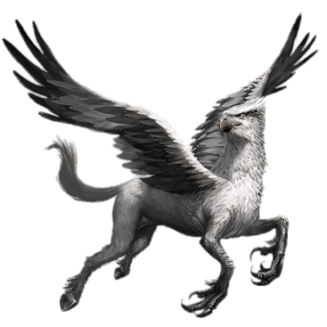
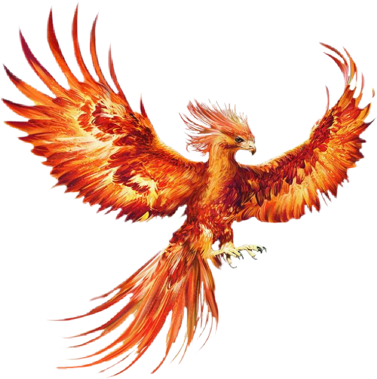
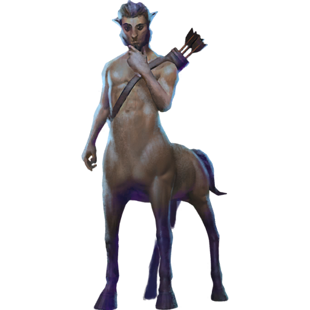

Der Niffler ist ein britisches Tierwesen. Dieses flaumige, schwarze Wühltier mit der langen, schnabelartigen Schnauze hat eine Vorliebe für alles, was glänzt und glitzert.
Kobolde halten sich gerne Niffler, die sie tief in der Erde nach Schätzen graben lassen. Zwar ist der Niffler friedlich und sogar zutraulich, doch kann er einiges Unheil mit persönlichen Wertsachen anrichten und sollte nie im Haus gehalten werden.
Niffler leben in höhlenartigen Bauten bis zu sieben Meter unter der Erde und gebären bei einem Wurf sechs bis acht Junge.
Hippogreif

Das eigenartige Mischwesen hat den Schwanz, die Hinterbeine und den Körper eines Pferdes, geht aber vorn in einen riesigen Adler über: Seine Vorderbeine enden in langen, gefährlich aussehenden Vogelkrallen; er hat Flügel mit einer Spannweite von knapp 4 Metern, sowie einen Vogelkopf mit scharf blickenden orangefarbenen Augen und einem massiven, stählern blitzenden Schnabel.
Das Fell von Hippogreifen wird vorn entsprechend zu einem Gefieder, das je nach der Farbe des Fells mal tiefschwarz, mal kupferfarben schimmert.
Drache
Die erstgenannte Beschreibung entspricht derjenigen, die Newt Scamander von dem Basilisken aus Joanne K. Rowlings magischer Welt gibt: Die grüne gekrönte Riesenschlange ermordet jedes Lebewesen, das ihm begegnet, mit seinen furchtbaren Waffen: Neben den tödlich giftigen Fangzähnen ist dies der berüchtigte »Basiliskenblick«. Ein einziger Blick der großen gelben Augen der Schlange tötet seine Opfer wahllos und sofort. Aber, das Krähen eines Hahns ist für Basilisken tödlich.
Die Anwesenheit eines Basilisken genügt, um Spinnen – selbst Acromantulas – in Panik zu versetzen und in die Flucht zu treiben.
Das Basiliskengift kann durch Phönixtränen neutralisiert werden.
Phoenix

Von einem magischen, flammenfarbenen Vogel, der so groß ist wie ein Adler, erzählen schon seit der Antike Mythen und Legenden in den verschiedensten Kulturkreisen u. a. aus Ägypten, Japan und China.
Da dieser prächtige Feuervogel sich verbrennt, um sich neugeboren aus der Asche zu erheben, gilt er bis heute auch als Symbol der Erneuerung, der Unsterblichkeit und der Wiedergeburt. Ihm werden etliche magischen Kräfte zugeschrieben.
Zentaur

Die ursprünglich aus der griechischen Mythologie bekannten Zentauren haben den Oberkörper eines Mannes und den Körper eines Pferdes. Sie sind bekannt als wildes und eigenwilliges Volk, das in Wäldern haust.
Berühmt sind sie für ihre Treffsicherheit im Bogenschießen und für ihre großen Kompetenzen in der Heilkunde und der Sterndeuterei.
Zentauren widersetzen sich allen Bestrebungen der Zauberergemeinschaft, andere Wesen einzustufen, zu benutzen und über sie zu bestimmen.